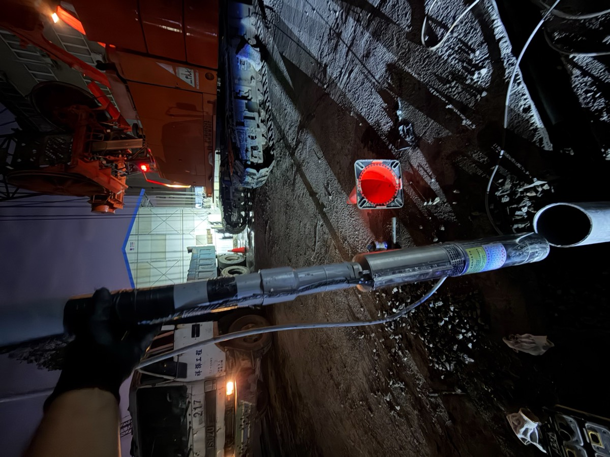
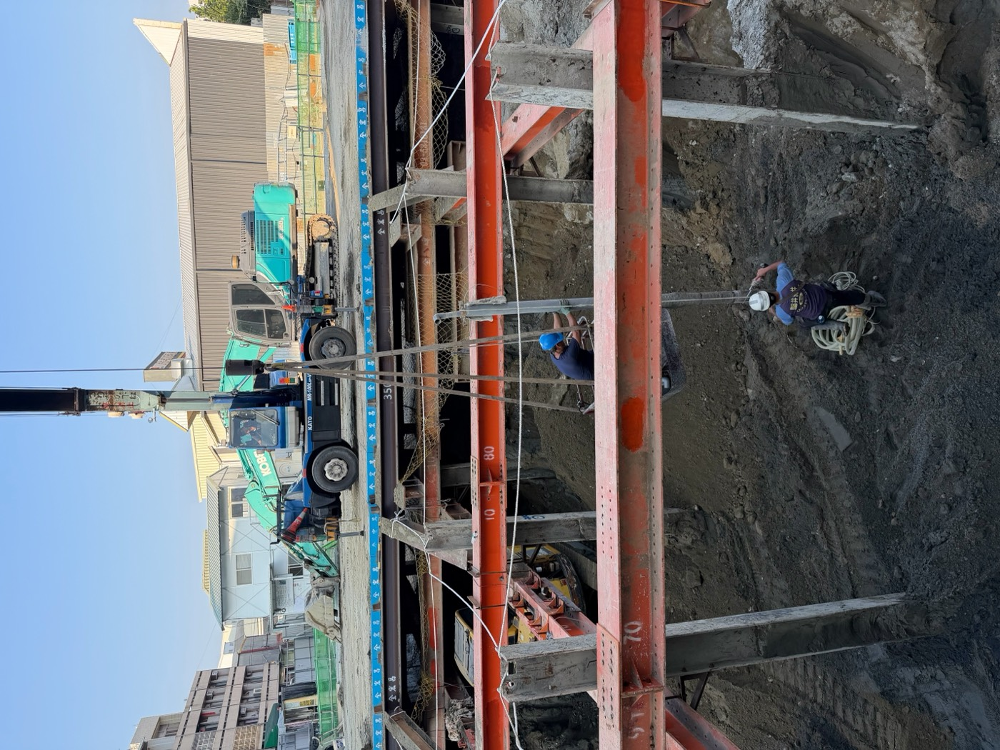
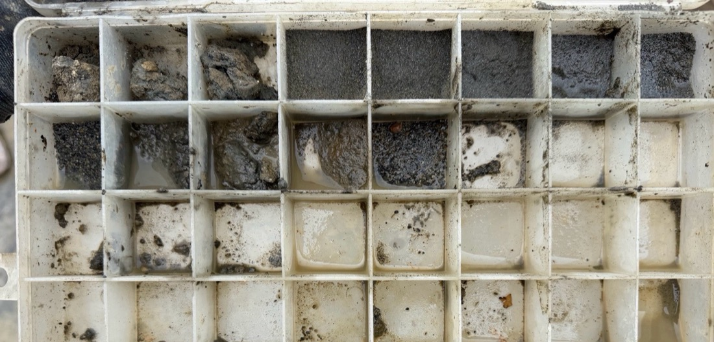
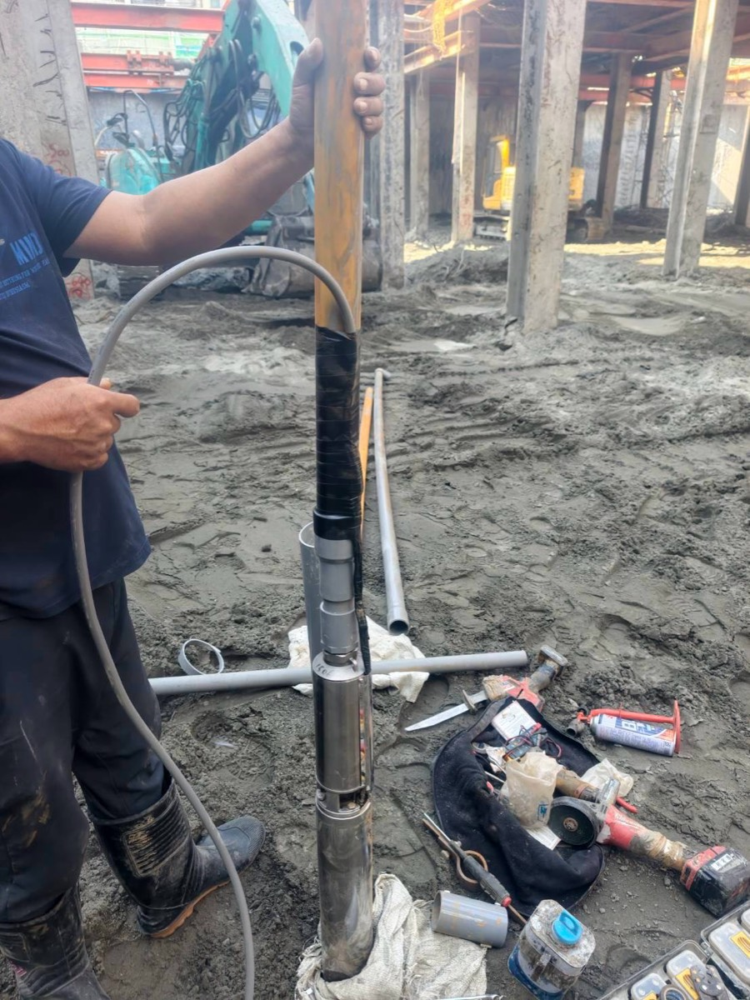
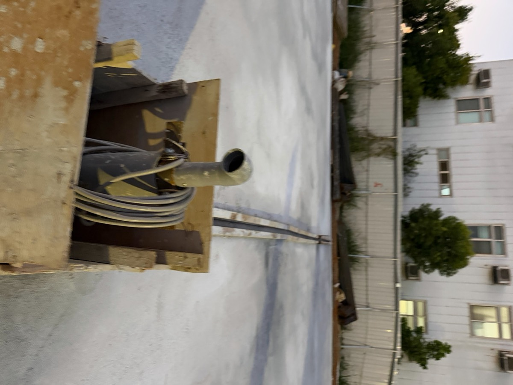
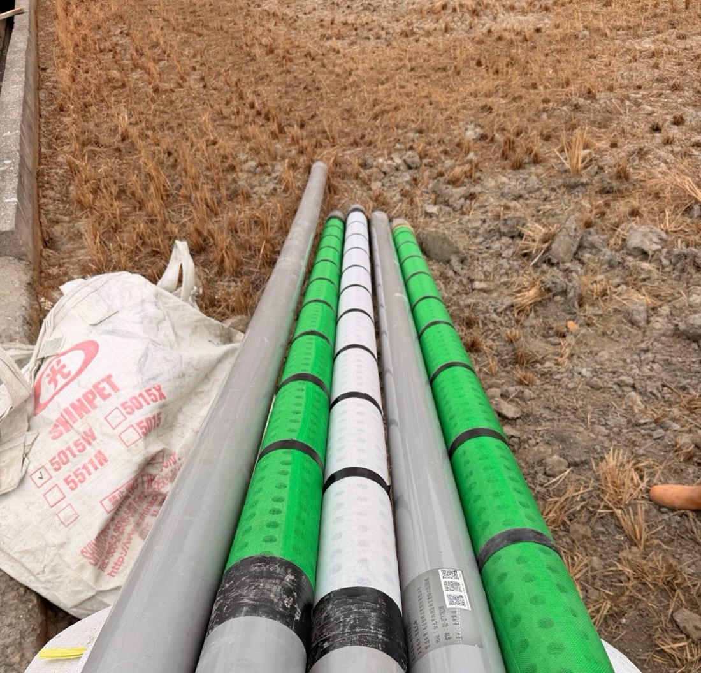

01 / Drilling
鑿井工程・鑽水井
依用途與地層條件規劃井深與井徑。鑽進時每 1 公尺採樣，依地層配置濾網與濾石，完成後空壓洗井並安裝馬達試水。
- 家用井
- 農業灌溉井
- 工廠工業井
- 深水井
- 水鑽機鑿井
- 衝擊式鑿井
- 橫向鑿井
- 舊井重新鑿設

02 / Dewatering
大樓地基降水點井
地下水位高的建築工地，開挖前需要設置降水點井束水降水，控制地下水位，避免開挖面湧水、土壤流失與鄰近結構受影響。我們配合營造工地進度施工，並提供完整施工紀錄。
- 開挖前點井規劃與鑽設
- 沉水馬達下放與排水管線配置
- 井口保護與後續維護
- 配合工地進度夜間施工

03 / Well Cleaning
洗井工程
井用久了出水變少、出砂或混濁，常常是濾石層被細砂與汙泥堵住。洗井可以把井內泥砂排出，讓濾石層恢復密實。
- 空壓式洗井
- 機械式洗井
- 改善井水出砂、混濁
- 改善鐵質過高
- 改善出水量不足
- 舊深水井清洗保養

04 / Pumps
沉水馬達・泵浦
經銷美國富蘭克林沉水馬達。新井安裝、舊馬達檢修更換，以及各種泵浦與自動化設備。
- 富蘭克林沉水馬達買賣
- 馬達安裝、拉馬達維修
- 深水泵浦安裝
- 水陸兩用泵浦
- 自動啟動組
- 水缸更換、抽水管線更改
- 不鏽鋼抽水管安裝
- 手壓泵浦

05 / Water Rights
地下水權申請・水錶安裝
依用途與用水量，多數水井需要依法申請地下水權。我們熟悉申請流程，可協助工廠、農地與一般用戶辦理，並安裝水錶。
- 地下水權申請
- 水錶安裝
- 工廠用水申請
- 農地用水申請

06 / Others
其他水井工程
與水井相關的周邊工程也可以一併處理。
- 井管加工
- 井管損壞修理
- 井底攝影檢查
- 陰井安裝
- 消防採水口配置
- 水質過濾設備
需要鑽水井、降水井或洗井？
先讓我們到現場看看。
彰化地區免費現場勘查，也可以先用 LINE 傳照片詢問。